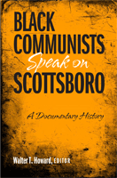

<body bgcolor="#FFFFFF" text="#000000" link="#0000FF" vlink="#CC0000" alink="#CC0000"><center><hr width="350" size="1" align="center" noshade>Surprising revelations about the role of black Communists in a notorious case of bigotry and injustice<hr width="350" size="1" align="center" noshade><p><a href="https://cdcshoppingcart.uchicago.edu/Cart/ChicagoBook.aspx?ISBN=9781592135974&&PRESS=temple" target="_top">Buy this book!</a> | <a href="https://cdcshoppingcart.uchicago.edu/Cart/Cart.aspx?PRESS=temple" target="_top">View Cart</a> | <a href="https://cdcshoppingcart.uchicago.edu/Cart/Cart.aspx?PRESS=temple" target="_top">Check Out</a></p><p></p></center><!--none//--><h1>Black Communists Speak on Scottsboro</h1>
<H2>A Documentary History</H2>
<h3>edited by Walter T. Howard</h3>
<P>cloth 1592135978 $55.50, Dec 07, <FONT COLOR=#990033>Available</FONT>
<br>Electronic Book 1592135994 $55.50 <FONT COLOR=#990033>Available</FONT>
<BR> 208 pp
5.5x8.25
</P><BLOCKQUOTE><I>"A unique blend of primary sources on the Scottsboro case. It is wonderful to see documents from the rich collection of CPUSA headquarter files finally making their way to readers! They provide a window into the day-to-day and year-by-year struggles waged by American (and international) Communists around the Scottsboro defense.</i></i>" <br>&#151<b>Gerald Zahavi</b>, Professor of History and Director, Documentary Studies Program, State University of New York at Albany</I></BLOCKQUOTE>
<p>On March 25, 1931, Alabama police detained nine young African American men at a railroad stop not far from Scottsboro. In the process, they encountered two white women-who promptly accused the young men of raping them. Soon after, all-white juries found the nine youths guilty and eight of them were sentenced to death. Although many Americans were outraged by the injustices of the case, the loudest voices raised in protest were those of members of the American Communist Party.
<p>
Many white Communists spoke out, but black Communists took the lead in organizing public protests and legal responses. As this surprising book makes clear, they were acting at the direction of the Communist International (Comintern) which had directed them to address the "Negro problem." Now, with the opening of formerly inaccessible Communist party archives, this collection of primary documents reveals the little-known but major roles played by black Communists in the case of "the Scottsboro Boys."
<BR>&nbsp;<h2>Excerpt</h2><P>Excerpt available at <a href="http://www.temple.edu/tempress">www.temple.edu/tempress</a></p>
<BR>&nbsp;<h2>Reviews</h2>
<P><I>"Howard provides insights into the modern civil rights struggle with this edited volume on the campaign by black American communists to free the defendants in the infamous Powell v. Alabama case…. Howard includes an overview essay that provides a strong context for the documents included in the text. Summing Up: Recommended."</i><br><b>&#151 Choice</b>
<P><I>"Howard's </I>Black Communists Speak on Scottsboro<I> adds to this burgeoning literature [of scholarly inquiry into the history of the black Left] and promises to renew old debates as well as spawn new ones regarding black radicals' complex relationship with the international Left....Skilled essayists, [the contributors] effectively situated the Scottsboro case within the larger context of the international working class' political, legal, and economic struggles.... [T]he selections do constitute a welcome addition to any classroom exploring the black radical tradition and the American left." </i><br><b>&#151The Journal of Southern History</b>
<P><I>"Walter T. Howard has made a solid contribution to the history of Communism and race and labor.... There are some fascinating discussions of the scope and dynamics of global grassroots efforts to free the Scottsboro boys.... Another important theme that the documents address is the tension between African-Americans in the Party and middle-class black leaders and civil rights organizations like the NAACP. Historians interested in class and political tensions within the African-American community will find these documents especially useful....This book is especially important after the election of Barack Obama as president.... Howard reminds us of the deep interconnections of race and class oppression and of a vibrant and rich tradition of radical black activism." </i><br><b>&#151American Communist History</b>
<BR>&nbsp;<h2>Contents</h2><P>
<br>Preface and Acknowledgements
<br> Introduction
<br>1. "They Shall Not Die!"
<br>2. A Call to Millions
<br>3. Harry Haywood Speaks
<br>4. William Patterson Speaks
<br>5. Monitoring the Case
<br>6. Following Through
<br>Epilogue
<br>Profiles of Black Communists
<br>Appendix
<br>Selected Bibliography
<br>Index
</P><BR>&nbsp;<H2>About the Author(s)</H2>
<P><b>Walter T. Howard</b> (1951-2015) was Professor of American History at Bloomsburg University in northeastern Pennsylvania. He was the editor of <i>B.D. Amis, African American Radical: A Short Anthology of His Writings and Speeches</i> and the author of <i>Lynchings: Extralegal Violence in Florida During the 1930s.</i></P>
<BR><H2>Subject Categories</H2>
<p><A HREF="/tempress/african.html" TARGET="_top">African American Studies</a>
<BR><A HREF="/tempress/history.html" TARGET="_top">History</a>
<BR><A HREF="/tempress/american.html" TARGET="_top">American Studies</a>
</p>
<p align="center"><a href="https://cdcshoppingcart.uchicago.edu/Cart/ChicagoBook.aspx?ISBN=9781592135974&&PRESS=temple" target="_top">Buy this book!</a> | <a href="https://cdcshoppingcart.uchicago.edu/Cart/Cart.aspx?PRESS=temple" target="_top">View Cart</a> | <a href="https://cdcshoppingcart.uchicago.edu/Cart/Cart.aspx?PRESS=temple" target="_top">Check Out</a></p><p><font face="Arial" size="1"><a href="copyright.html" onMouseOver="window.status='Web Copyright Policy';return true;" onMouseOut="window.status=''" title="Web Copyright Policy">&copy;</a> 2015 <a href="http://www.temple.edu" target="new" onMouseOver="window.status='Link to Temple University home page';return true;" onMouseOut="window.status=''" title="Link to Temple University home page">Temple University</a>. All Rights Reserved. http://www.temple.edu/tempress/titles/1893_reg.html</font></p>